Knotted 2025 Campaigns
A year of seasonal campaigns for Knotted Donut, each built on a single line of copy.

- Client
- GFFG
- Location
- Seoul, Korea
- Year
- 2025
- Role
- Creative Director
- Scope
- Campaign concepts, art direction, key visual production
Six campaigns across the 2025 calendar: Low Sugar Extra Happy, Every Lover Needs Sweet Hearts, Sweetest Celebration, When Life Gets Tough, Just Eat S’more, Let Your Memories Blossom, and Symphony of Strawberries.
Each ran as a complete visual system — key visual, in-store application and product framing — so a seasonal flavour launch arrived as a campaign rather than a poster.
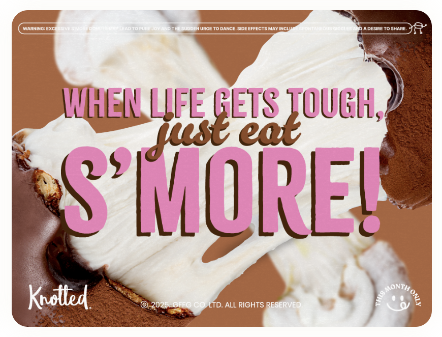
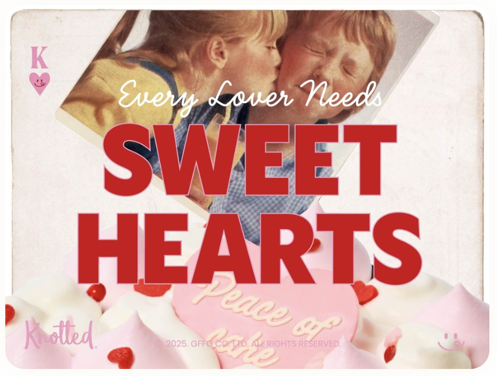
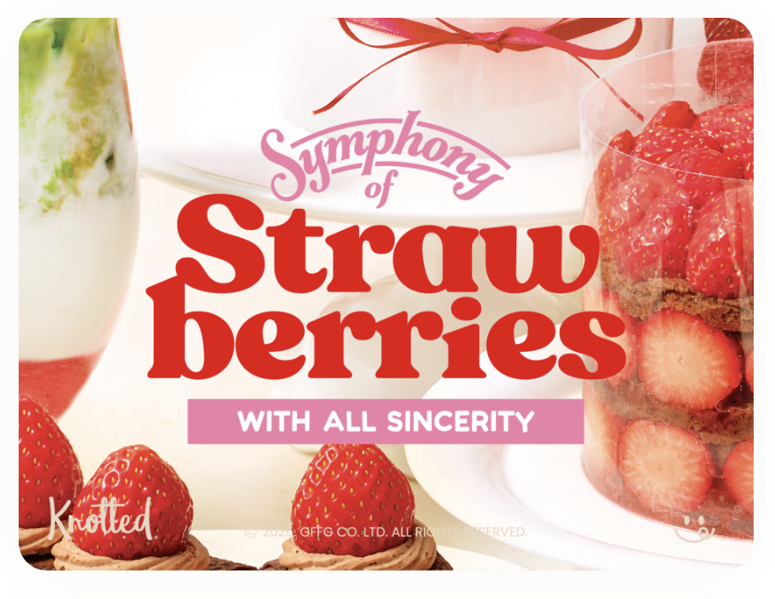
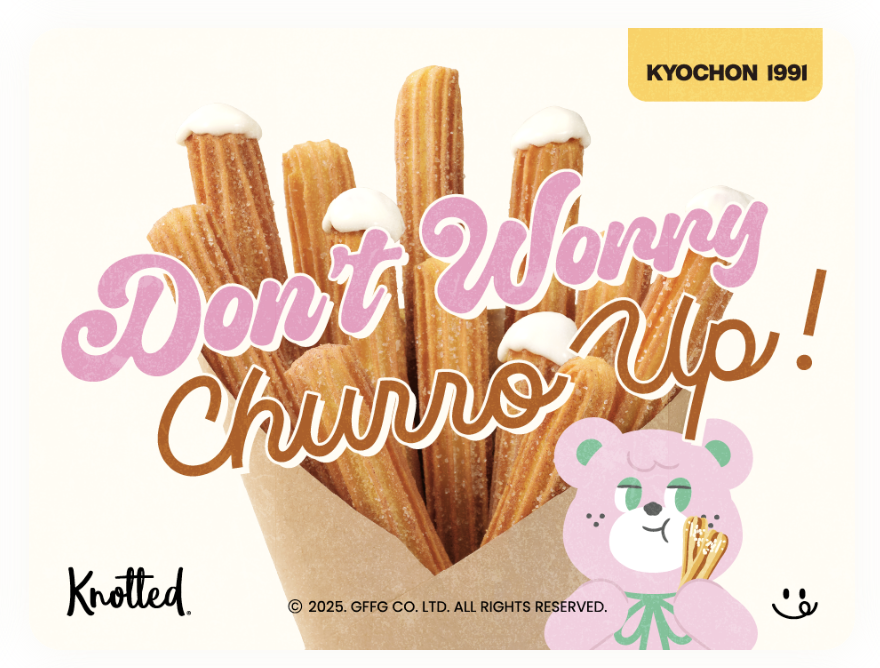
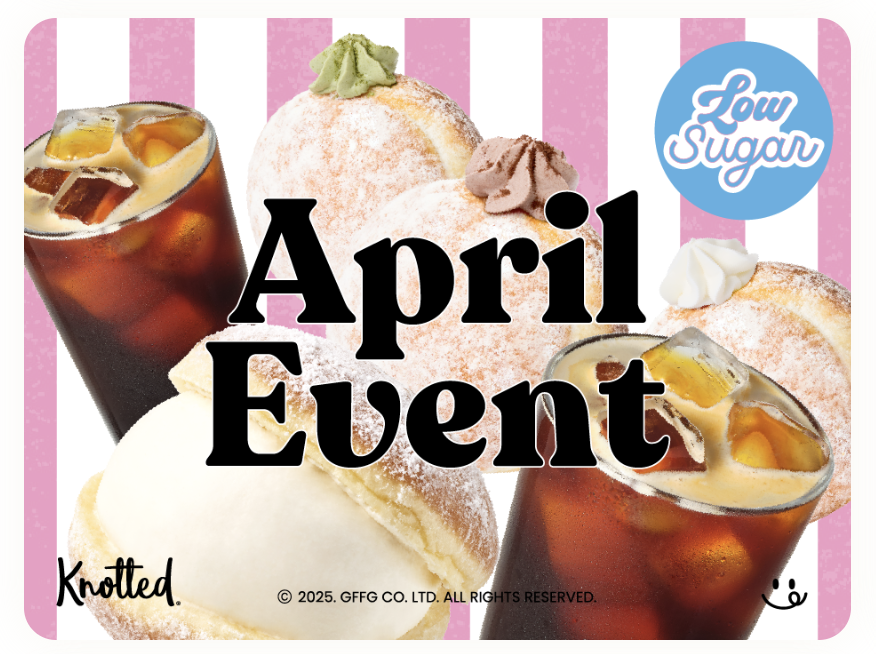
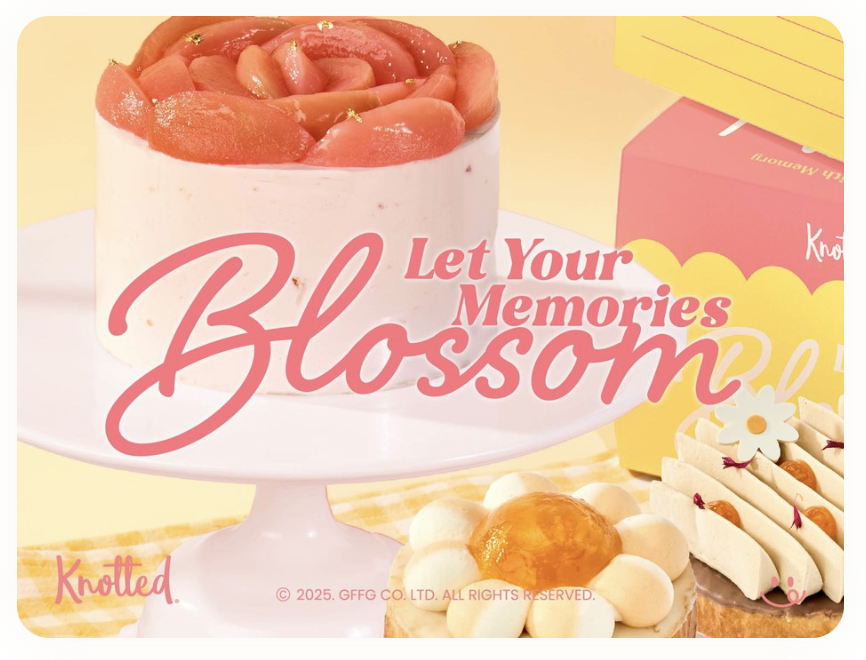
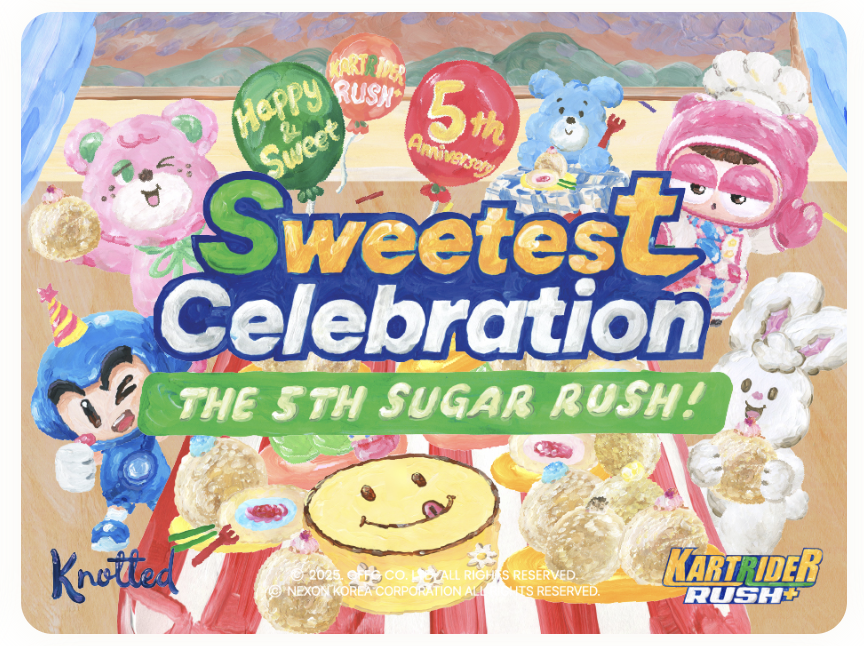
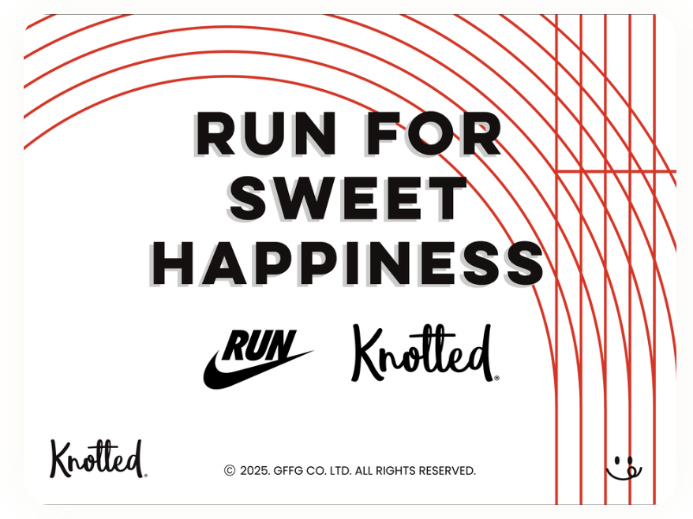
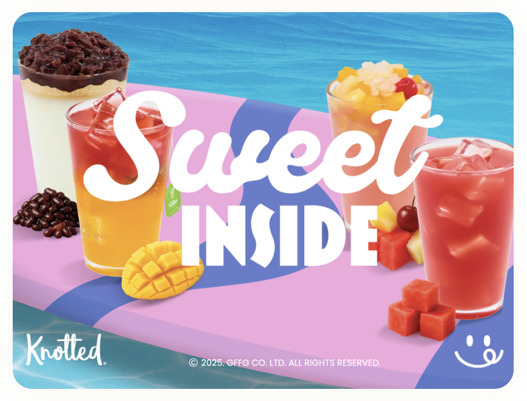
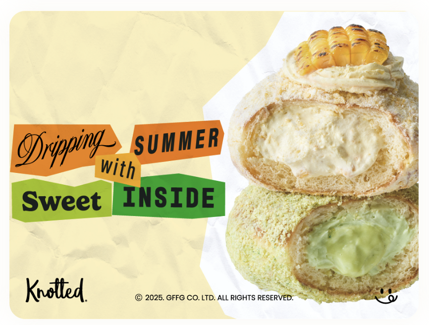
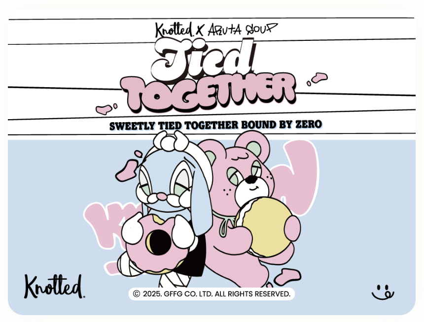
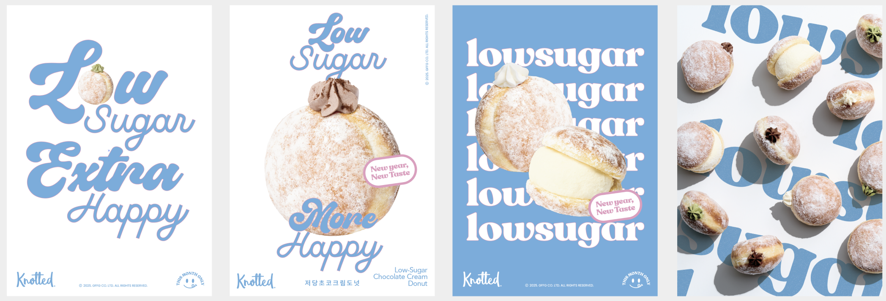
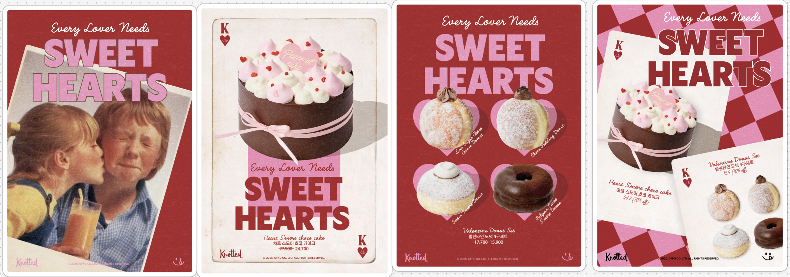
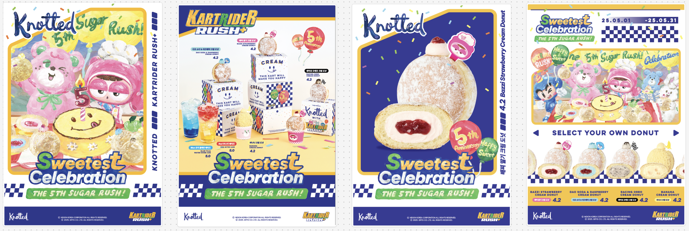
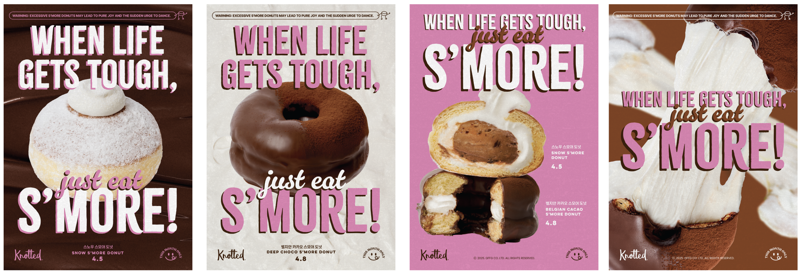
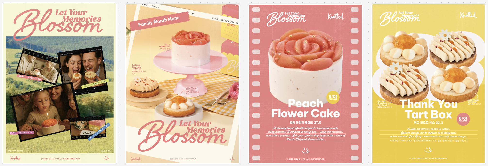
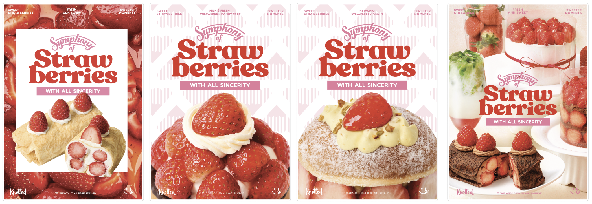